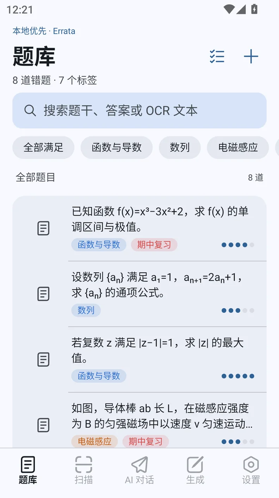
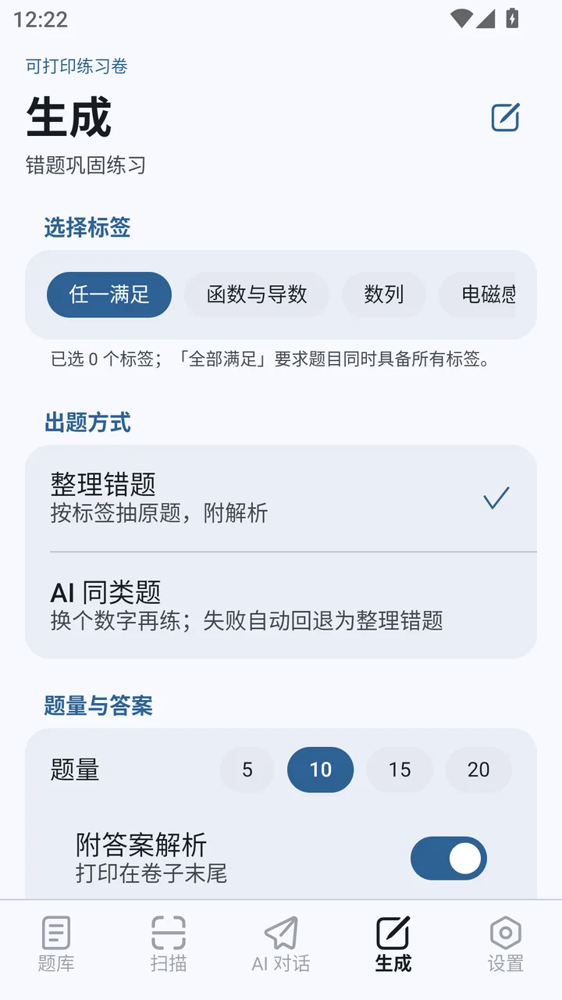
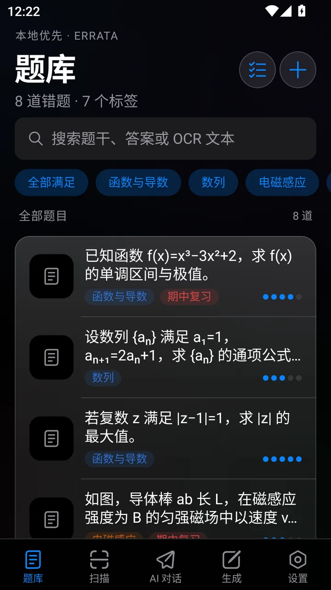
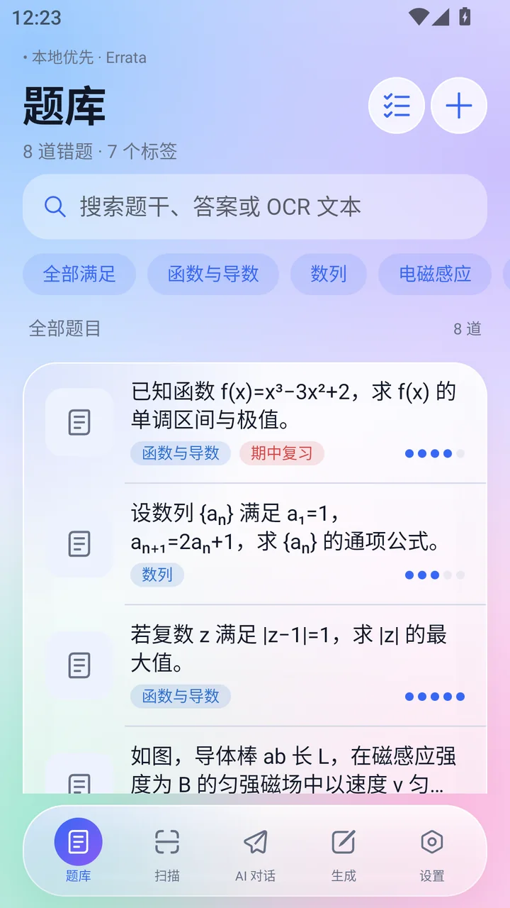
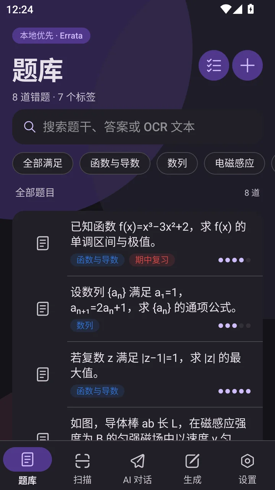
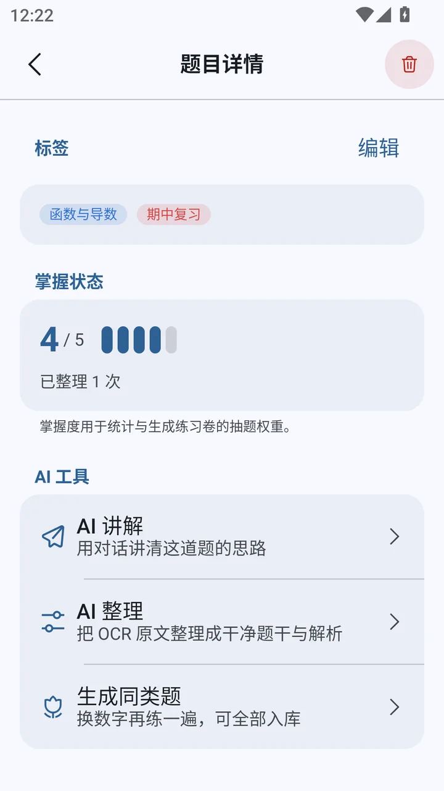
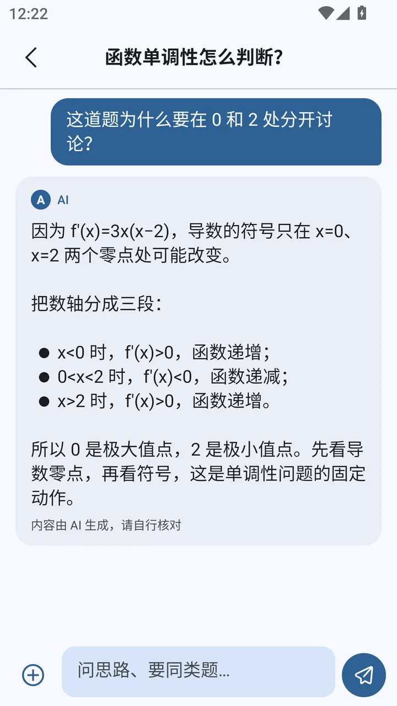

SCAN & SEGMENT
双引擎切题
配了视觉模型，先让 AI 直接返回每道题的 bbox；没配或失败，自动降级到本地 OCR + 题号正则。界面会告诉你，这一页是谁认的。
- 题号 12. / （3） / 三、都能认
- 小数 3.14 不会被误判成题号
ERRATA · 离线优先的 AI 错题本
整页试卷拍下来，自动矫正、识别题号、切成一道道错题。打标签、问 AI、按标签生成练习卷——数据默认只留在你的手机里。

WHY ERRATA
把错题拍下来，只是第一步。真正有用的，是它有没有被切开、被归类、被讲懂、被再做一遍。
很多错题本停在「拍下来、存起来」。Errata 把后面的动作也接上：自动切题、标签分类、AI 讲解、按薄弱点出卷。你只需要决定，什么时候开始复习。
没网、没 Key，拍照、OCR、题库、标签照样能用。
收藏夹就是标签，一题多标签，删标签不删题。
能不用就不用；要用时，用你自己的 Key。
HOW IT WORKS
四个动作，把一次「拍下来」变成一次真正的复习。
歪着拍也没关系。拖一下四角做透视矫正，图片压到长边 1600px 再入库。
透视矫正 · 自动旋转配了视觉模型就先让 AI 框题；没有或失败，自动退回本地 ML Kit OCR，按题号切分。
双引擎 · 会标明来源一题多标签、两级收藏夹、AND/OR 筛选。标签可以改色、排序，删除只解除分类。
多标签 · 收藏夹按标签抽 5 / 10 / 15 / 20 题，附答案解析。可以直接打印，也可以另存 PDF。
整理错题 · AI 同类题FEATURES
没有为了「AI」而 AI。每一个功能，都对应一次真实的复习动作。
配了视觉模型，先让 AI 直接返回每道题的 bbox；没配或失败，自动降级到本地 OCR + 题号正则。界面会告诉你，这一页是谁认的。
流式回复、Markdown / LaTeX、思考过程展示、对话附图。题目详情里直接开讲，也可以把 OCR 原文整理成干净题干。
一题多标签，两级分类；筛选支持 AND / OR。删标签只解除分类，不会删掉题目。
澎湃 OS、iOS、0.9.0 液态玻璃、MD3 Expressive。共用一套页面逻辑，题库和标签原样保留。
无账号、无云同步、无埋点。API Key 用 Keystore 加密，导出 ZIP 里也不会出现。
选标签、选题量，选「整理错题」或「AI 生成同类题」。预览后调用系统打印，可另存 PDF。AI 失败会自动回退成整理错题，不会给你一张空卷。

FOUR SKINS
不是四个 App，是四套皮肤。共用同一套页面逻辑与数据，切换只改变气质。
MIUIX / HYPEROS · 默认
最克制的一套。纯色取色、内嵌列表、贴底导航，信息密度高，长时间看也不累。
设置 → 外观 → 界面风格，随时切换。

IOS / CUPERTINO
分组列表、玻璃材质、SF 风格字阶。给习惯 iOS 的人一点熟悉感，但它仍然运行在 Android 上。
设置 → 外观 → 界面风格，随时切换。

0.9.0 / LIQUID GLASS
极光背景、悬浮胶囊导航、蓝紫渐变按钮。允许自己在一本错题本里，浪漫一下。
设置 → 外观 → 界面风格，随时切换。

MATERIAL 3 EXPRESSIVE
药丸按钮、大圆角、动态色、弹性导航。Material 3 的另一种表情，适合喜欢深色的人。
设置 → 外观 → 界面风格，随时切换。


PRIVACY, BY DEFAULT
Errata 没有服务器，也没有账号。题目、图片、标签、对话都保存在本机；只有你主动配置并调用大模型时，必要的文本才会发给你选择的服务商。
模型服务商如何处理数据，适用其自身隐私政策；你可以在设置里随时删除配置。
DOWNLOAD
公开测试版，直接分发 APK。Android 7.0 及以上；安装前需要允许「安装未知来源应用」。覆盖安装会保留题库。
安装包来自 GitHub Releases；App 内「设置 → 检查更新」也可以直接升级。
免费。0.x 是公开测试版，代码在 GitHub 上，APK 直接从 Releases 下载。没有内购，也没有广告。
默认不会。拍照、OCR、切题、题库、标签都在本机完成。只有你配置了大模型 API，并主动发起对话、讲解、整理或生成同类题时，必要的文本才会发送给你选择的服务商。不会后台上传整本图库。
不必。不配 Key 也能拍照、本地 OCR、切题、打标签、搜索、生成原题练习卷。AI 只是增强：识图切题、讲解、整理和出同类题。
目前只有 Android 7.0+。四套皮肤里有一套 iOS 风格，但它不是 iOS 版，也不能在 iPhone 上安装。
设置 → 检查更新，或在本页下载新 APK 覆盖安装。覆盖安装不会清空题库。换机或怕丢数据，先在「设置 → 数据 → 导出题库」存一个 ZIP。
个人开发，0.x 还在测试期，直接用 GitHub Releases 分发更灵活。安装时需要允许浏览器或文件管理器「安装未知来源应用」。
「设置 → 数据 → 导出题库」会生成一个 ZIP，包含题目 JSON、标签、对话和图片，不含 API Key。在新机导入时会按「原文 + 创建时间」判重，自动跳过重复题。